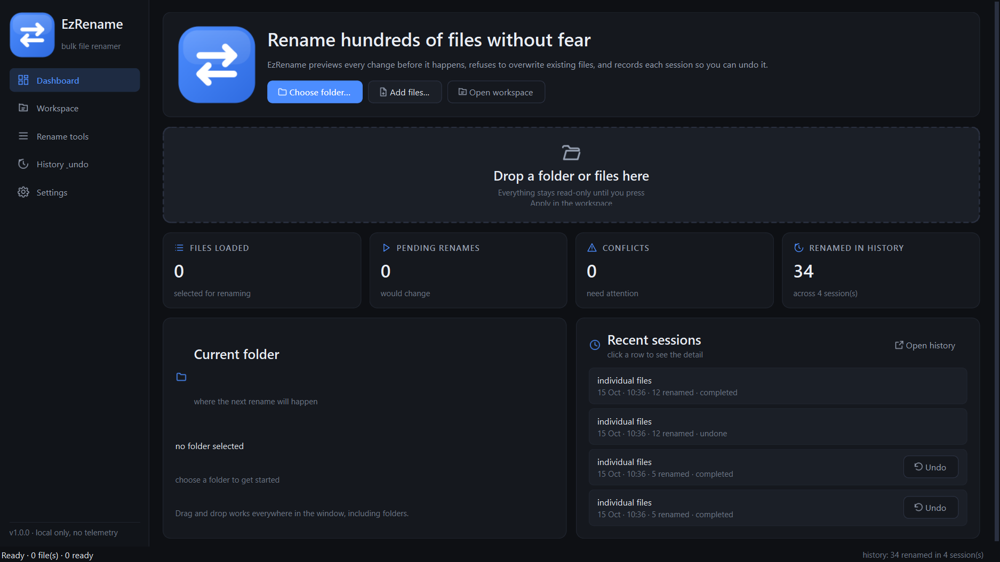
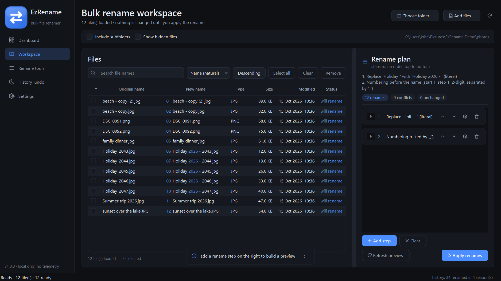
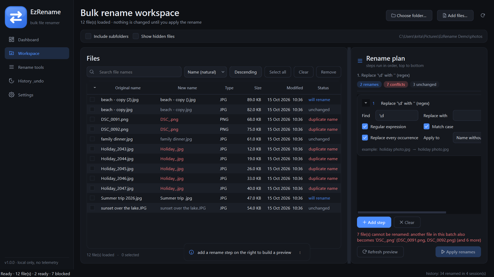
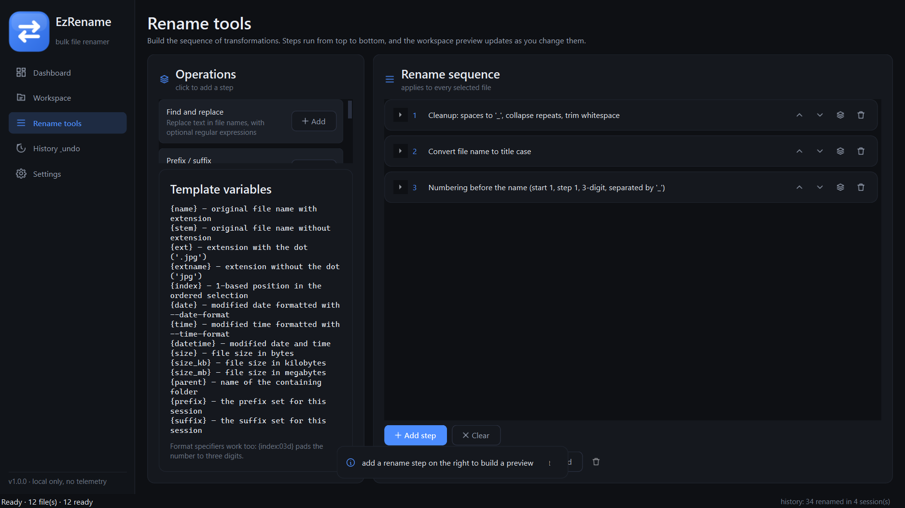
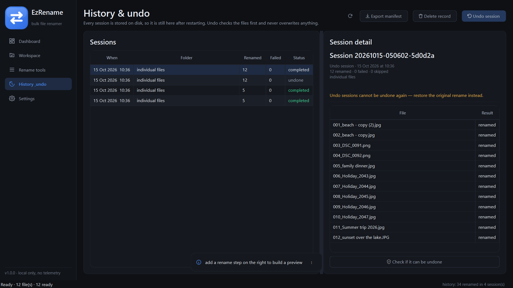
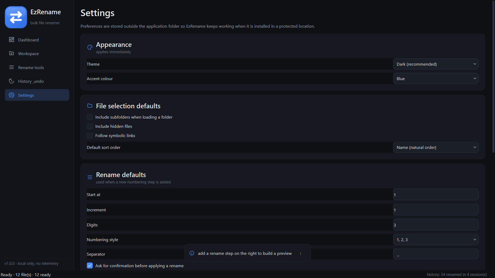
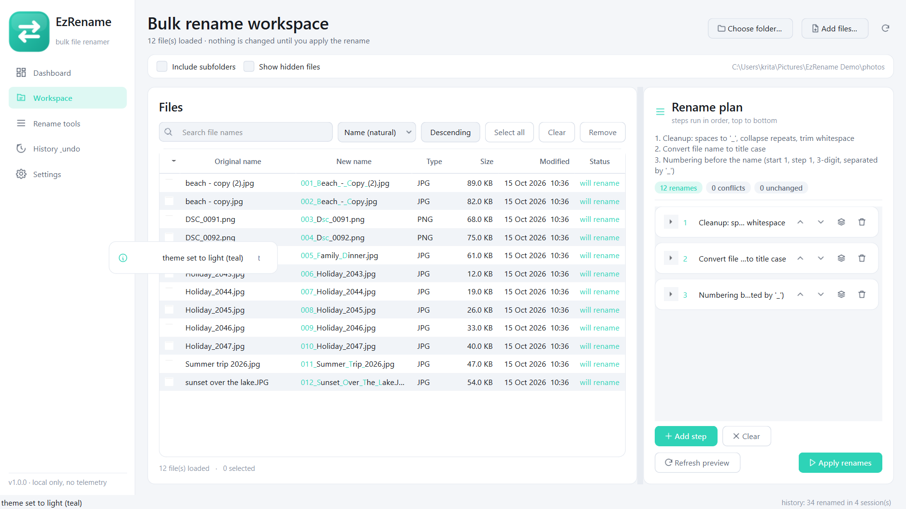
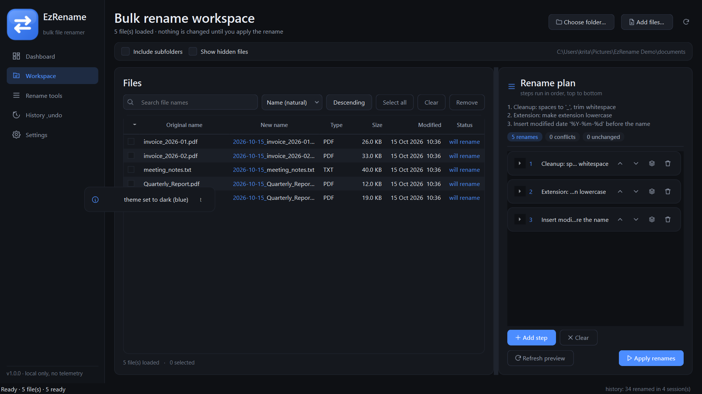

Dashboard. Folder actions, real counters for the current
selection and the most recent rename sessions with a one-click undo.

Workspace. Original name next to the proposed name, with the
changed characters highlighted, status per row and the rename sequence on the right.

Conflicts are blocked, not guessed. Operations that would give two
files the same name are marked in red and the apply button stays disabled.

Rename tools. The operation catalogue, the ordered sequence with
per-step editors, saved presets and the template variable reference.

History & undo. Sessions survive restarts; each one can be
re-verified, restored, exported as a manifest or deleted from the record.

Settings. Theme and accent, selection defaults, numbering defaults,
history retention, storage locations and the shortcut reference.

Light theme. The same design system with the light palette and a
different accent colour — every control is styled from the same tokens.

Documents workflow. Space normalisation, lower-cased extensions and
a date prefix added in one pass.